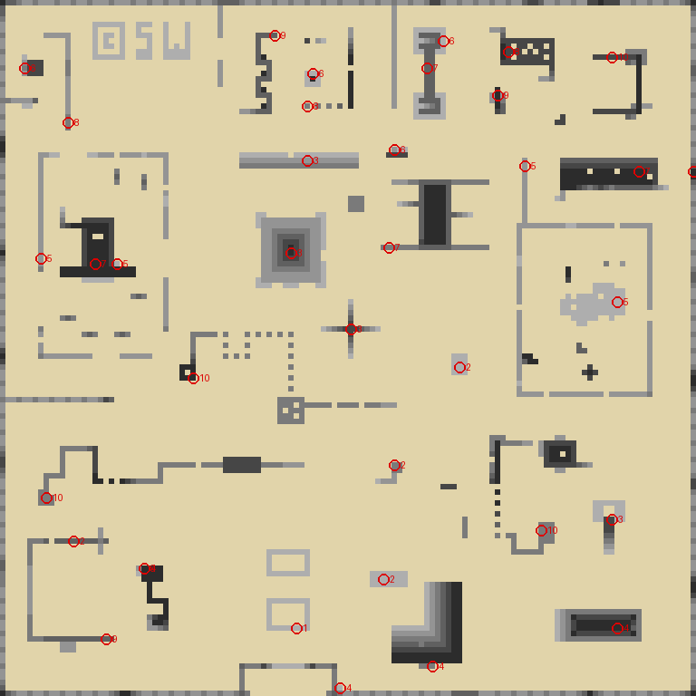
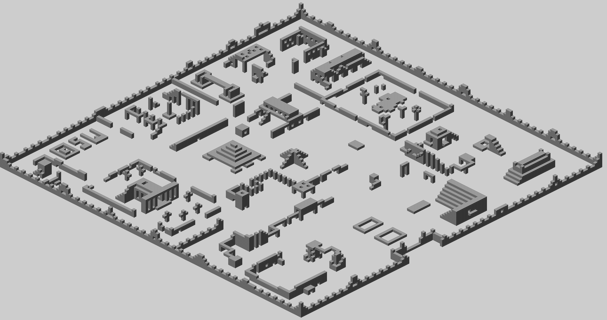

| Ant Attack | The city of Antescher |
Antescher is a map of 128 by 128 cells at CITY_MAP, one byte a cell and one bit a height: bit 0 is a block on the ground, bit 5 a block five up, so a wall is a column of set bits. Coordinates run from $80 to $FF; anything lower is outside the walls, where nothing is solid and nothing collides.
From above, the taller the darker, with the places the person to be rescued waits on each level ringed in red and numbered by level. x runs left to right, y top to bottom.

And the whole city at once, the way the game draws a corner of it: view 0, each block the picture DRAW_BLOCK paints -- captured by running that routine rather than copied -- and painted in the same order DRAW_SCENE uses, lowest height first and then from the back, so every block hides exactly what it hides in the game.
